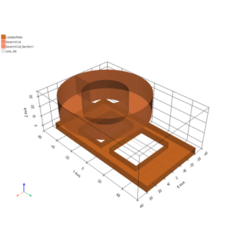
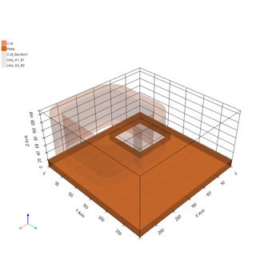
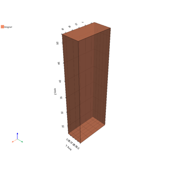

Maxwell examples#
These examples use PyAEDT to show some end-to-end workflows for Maxwell 2D and Maxwell 3D. This includes model generation, setup, meshing, and postprocessing. Examples cover different Maxwell solution types (Eddy Current, Magnetostatic, and Transient).

Maxwell 2D: PM synchronous motor transient analysis
Maxwell 2D: PM synchronous motor transient analysis


Maxwell 3D: bath plate analysis
Maxwell 3D: bath plate analysis

Maxwell 3D: asymmetric conductor analysis
Maxwell 3D: asymmetric conductor analysis


Maxwell 3D: magnet DC analysis
Maxwell 3D: magnet DC analysis